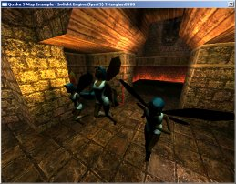

The Irrlicht
Engine Documentation © 2003-2009 by Nikolaus Gebhardt. Generated
on Sun Dec 13 09:14:15 2009 by Doxygen
(1.5.6)
| Home | Namespaces | Hierarchy | Alphabetical List | Class list | Files | Namespace Members | Class members | File members | Tutorials |

In this tutorial, I will show how to detect collisions with the Irrlicht Engine. I will describe 3 methods: Automatic collision detection for moving through 3d worlds with stair climbing and sliding, manual triangle picking, and manual scene node picking.
To start, we take the program from tutorial 2, which loads and displays a quake 3 level. We will use the level to walk in it and to pick triangles from it. In addition we'll place 3 animated models into it for scene node picking. The following code starts up the engine and loads a quake 3 level. I will not explain it, because it should already be known from tutorial 2.
#include <irrlicht.h> #include <iostream> using namespace irr; #ifdef _MSC_VER #pragma comment(lib, "Irrlicht.lib") #endif int main() { // let user select driver type video::E_DRIVER_TYPE driverType; printf("Please select the driver you want for this example:\n"\ " (a) Direct3D 9.0c\n (b) Direct3D 8.1\n (c) OpenGL 1.5\n"\ " (d) Software Renderer\n (e) Burning's Software Renderer\n"\ " (f) NullDevice\n (otherKey) exit\n\n"); char i; std::cin >> i; switch(i) { case 'a': driverType = video::EDT_DIRECT3D9;break; case 'b': driverType = video::EDT_DIRECT3D8;break; case 'c': driverType = video::EDT_OPENGL; break; case 'd': driverType = video::EDT_SOFTWARE; break; case 'e': driverType = video::EDT_BURNINGSVIDEO;break; case 'f': driverType = video::EDT_NULL; break; default: return 0; } // create device IrrlichtDevice *device = createDevice(driverType, core::dimension2d<s32>(640, 480), 16, false); if (device == 0) return 1; // could not create selected driver. video::IVideoDriver* driver = device->getVideoDriver(); scene::ISceneManager* smgr = device->getSceneManager(); device->getFileSystem()->addZipFileArchive("../../media/map-20kdm2.pk3"); scene::IAnimatedMesh* q3levelmesh = smgr->getMesh("20kdm2.bsp"); scene::ISceneNode* q3node = 0; if (q3levelmesh) q3node = smgr->addOctTreeSceneNode(q3levelmesh->getMesh(0));
So far so good, we've loaded the quake 3 level like in tutorial 2. Now, here comes something different: We create a triangle selector. A triangle selector is a class which can fetch the triangles from scene nodes for doing different things with them, for example collision detection. There are different triangle selectors, and all can be created with the ISceneManager. In this example, we create an OctTreeTriangleSelector, which optimizes the triangle output a little bit by reducing it like an octree. This is very useful for huge meshes like quake 3 levels. After we created the triangle selector, we attach it to the q3node. This is not necessary, but in this way, we do not need to care for the selector, for example dropping it after we do not need it anymore.
scene::ITriangleSelector* selector = 0;
if (q3node)
{
q3node->setPosition(core::vector3df(-1350,-130,-1400));
selector = smgr->createOctTreeTriangleSelector(
q3levelmesh->getMesh(0), q3node, 128);
q3node->setTriangleSelector(selector);
}
We add a first person shooter camera to the scene for being able to move in the quake 3 level like in tutorial 2. But this, time, we add a special animator to the camera: A Collision Response animator. This animator modifies the scene node to which it is attached to in order to prevent it moving through walls, and to add gravity to it. The only thing we have to tell the animator is how the world looks like, how big the scene node is, how much gravity to apply and so on. After the collision response animator is attached to the camera, we do not have to do anything more for collision detection, anything is done automatically, all other collision detection code below is for picking. And please note another cool feature: The collision response animator can be attached also to all other scene nodes, not only to cameras. And it can be mixed with other scene node animators. In this way, collision detection and response in the Irrlicht engine is really, really easy.
Now we'll take a closer look on the parameters of createCollisionResponseAnimator(). The first parameter is the TriangleSelector, which specifies how the world, against collision detection is done looks like. The second parameter is the scene node, which is the object, which is affected by collision detection, in our case it is the camera. The third defines how big the object is, it is the radius of an ellipsoid. Try it out and change the radius to smaller values, the camera will be able to move closer to walls after this. The next parameter is the direction and speed of gravity. We'll set it to (0, -10, 0), which approximates to realistic gravity, assuming that our units are metres. You could set it to (0,0,0) to disable gravity. And the last value is just a translation: Without this, the ellipsoid with which collision detection is done would be around the camera, and the camera would be in the middle of the ellipsoid. But as human beings, we are used to have our eyes on top of the body, with which we collide with our world, not in the middle of it. So we place the scene node 50 units over the center of the ellipsoid with this parameter. And that's it, collision detection works now.
// Set a jump speed of 3 units per second, which gives a fairly realistic jump // when used with the gravity of (0, -10, 0) in the collision response animator. scene::ICameraSceneNode* camera = smgr->addCameraSceneNodeFPS(0, 100.0f, .3f, -1, 0, 0, true, 3.f); camera->setPosition(core::vector3df(-100,50,-150)); if (selector) { scene::ISceneNodeAnimator* anim = smgr->createCollisionResponseAnimator( selector, camera, core::vector3df(30,50,30), core::vector3df(0,-10,0), core::vector3df(0,50,0)); camera->addAnimator(anim); anim->drop(); }
Because collision detection is no big deal in irrlicht, I'll describe how to do two different types of picking in the next section. But before this, I'll prepare the scene a little. I need three animated characters which we could pick later, a dynamic light for lighting them, a billboard for drawing where we found an intersection, and, yes, I need to get rid of this mouse cursor. :)
// disable mouse cursor device->getCursorControl()->setVisible(false); // add billboard scene::IBillboardSceneNode * bill = smgr->addBillboardSceneNode(); bill->setMaterialType(video::EMT_TRANSPARENT_ADD_COLOR ); bill->setMaterialTexture(0, driver->getTexture("../../media/particle.bmp")); bill->setMaterialFlag(video::EMF_LIGHTING, false); bill->setMaterialFlag(video::EMF_ZBUFFER, false); bill->setSize(core::dimension2d<f32>(20.0f, 20.0f)); // add 3 animated faeries. video::SMaterial material; material.setTexture(0, driver->getTexture("../../media/faerie2.bmp")); material.Lighting = true; scene::IAnimatedMeshSceneNode* node = 0; scene::IAnimatedMesh* faerie = smgr->getMesh("../../media/faerie.md2"); if (faerie) { node = smgr->addAnimatedMeshSceneNode(faerie); node->setPosition(core::vector3df(-70,0,-90)); node->setMD2Animation(scene::EMAT_RUN); node->getMaterial(0) = material; node = smgr->addAnimatedMeshSceneNode(faerie); node->setPosition(core::vector3df(-70,0,-30)); node->setMD2Animation(scene::EMAT_SALUTE); node->getMaterial(0) = material; node = smgr->addAnimatedMeshSceneNode(faerie); node->setPosition(core::vector3df(-70,0,-60)); node->setMD2Animation(scene::EMAT_JUMP); node->getMaterial(0) = material; } material.setTexture(0, 0); material.Lighting = false; // Add a light smgr->addLightSceneNode(0, core::vector3df(-60,100,400), video::SColorf(1.0f,1.0f,1.0f,1.0f), 600.0f);
For not making it to complicated, I'm doing picking inside the drawing loop. We take two pointers for storing the current and the last selected scene node and start the loop.
scene::ISceneNode* selectedSceneNode = 0;
scene::ISceneNode* lastSelectedSceneNode = 0;
int lastFPS = -1;
while(device->run())
if (device->isWindowActive())
{
driver->beginScene(true, true, 0);
smgr->drawAll();
After we've drawn the whole scene with smgr->drawAll(), we'll do the first picking: We want to know which triangle of the world we are looking at. In addition, we want the exact point of the quake 3 level we are looking at. For this, we create a 3d line starting at the position of the camera and going through the lookAt-target of it. Then we ask the collision manager if this line collides with a triangle of the world stored in the triangle selector. If yes, we draw the 3d triangle and set the position of the billboard to the intersection point.
core::line3d<f32> line;
line.start = camera->getPosition();
line.end = line.start + (camera->getTarget() - line.start).normalize() * 1000.0f;
core::vector3df intersection;
core::triangle3df tri;
if (smgr->getSceneCollisionManager()->getCollisionPoint(
line, selector, intersection, tri))
{
bill->setPosition(intersection);
driver->setTransform(video::ETS_WORLD, core::matrix4());
driver->setMaterial(material);
driver->draw3DTriangle(tri, video::SColor(0,255,0,0));
}
Another type of picking supported by the Irrlicht Engine is scene node picking based on bounding boxes. Every scene node has got a bounding box, and because of that, it's very fast for example to get the scene node which the camera looks at. Again, we ask the collision manager for this, and if we've got a scene node, we highlight it by disabling Lighting in its material, if it is not the billboard or the quake 3 level.
selectedSceneNode =
smgr->getSceneCollisionManager()->getSceneNodeFromCameraBB(camera);
if (lastSelectedSceneNode)
lastSelectedSceneNode->setMaterialFlag(video::EMF_LIGHTING, true);
if (selectedSceneNode == q3node || selectedSceneNode == bill)
selectedSceneNode = 0;
if (selectedSceneNode)
selectedSceneNode->setMaterialFlag(video::EMF_LIGHTING, false);
lastSelectedSceneNode = selectedSceneNode;
That's it, we just have to finish drawing.
driver->endScene();
int fps = driver->getFPS();
if (lastFPS != fps)
{
core::stringw str = L"Collision detection example - Irrlicht Engine [";
str += driver->getName();
str += "] FPS:";
str += fps;
device->setWindowCaption(str.c_str());
lastFPS = fps;
}
}
selector->drop();
device->drop();
return 0;
}
| |
The Irrlicht
Engine Documentation © 2003-2009 by Nikolaus Gebhardt. Generated
on Sun Dec 13 09:14:15 2009 by Doxygen
(1.5.6) |